Data Visualization in R
Data visualization is an important part of exploring, understanding,
and sharing our data.
Data visualization is a critical part of the data science workflow.
Through visualization we can explore and understand our own data,
ultimately informing further analyses. Additionally, data visualizations
are a powerful tool for communicating data and research findings to
other people. Visuals can often more efficiently and more effectively
tell the story of your data, rather than only relying on writing. Well
done data visualizations will often have the biggest impact on an
audience in a science communication context.
 Source
Source
In this session we have a few main goals:
Introduction to types of data visualizations
Discussion of what makes a good visualization
Review and critique some data visualization examples
Introduction to ggplot to generate visualizations in R
Let’s get started!
Types of Data Visualization
Data visualizations can be descriptive in nature, such as portraying
the demographic distribution of a group of people, or can represent
statistical findings, such as a regression line with a confidence
interval overlaid on a scatter plot of data. In certain contexts it is
also common to present data and information in more easily digestible
infographics (check out some
examples here) that enter more of a graphic design space. Different
data visualizations fulfill different goals. Having a toolbox of a
variety of data visualization types can help you pick the best type to
fit your needs for a given project.
Table
Tables to collect and organize data are one of the most common and
basic data visualizations. But don’t discount them! They can be
efficient ways to convey a large amount of information about your data
all at once.
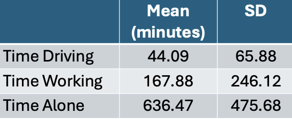
Pie Chart
A classic pie chart is useful for representing parts that add up to a
whole. This also allows for comparing group sizes. They are often used
for demographic variables, with the whole representing the whole sample,
or for representing money, with the whole representing a budget or total
money spent/made. Be careful to use a pie chart only when it really adds
to the story. For instance, if there are only two parts to the whole, a
pie chart might not convey much more information. Conversely, if there
are many groups, it can become difficult to really see all of them and
compare them.
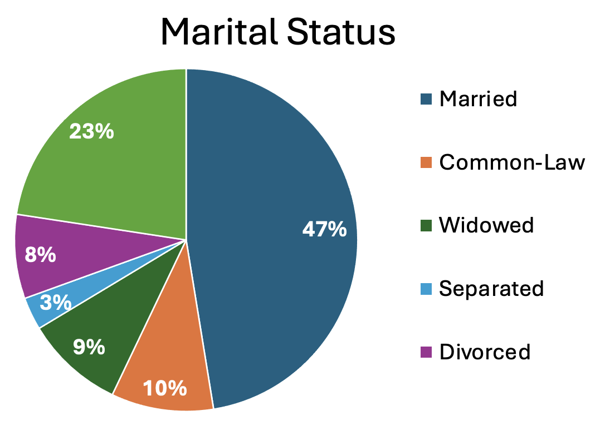
Box Plots
Box plots (also known as box and whisker plots) are good for
understanding and comparing variance between groups. They typically
depict the median and minimum/maximum of each group for a certain
variable. The box portion represents the 1st and 3rd quartiles of the
distribution. You can also show change over time with this type of
plot.
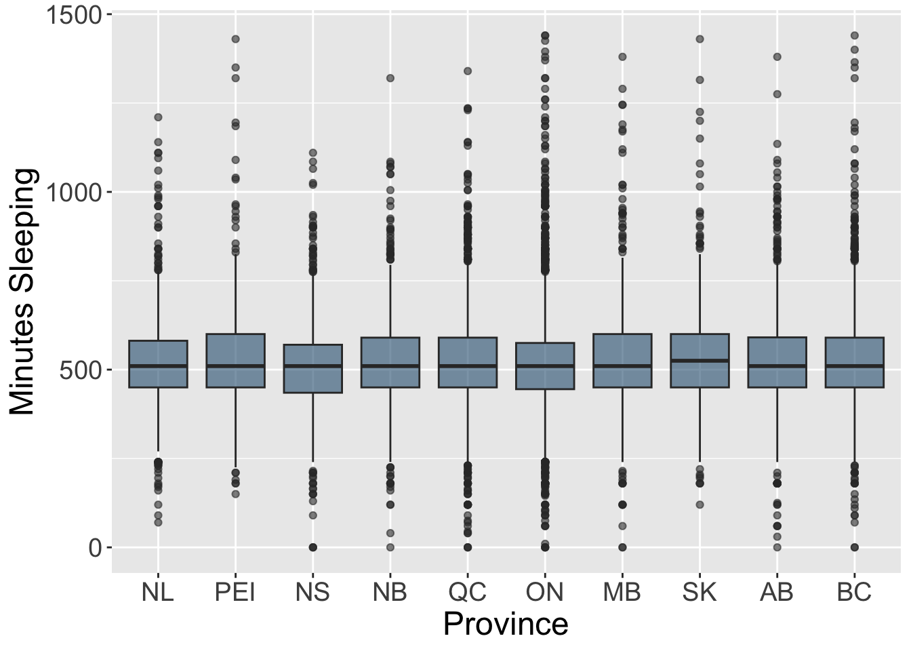
Histogram
Histograms display the distribution of one variable. The height of
the bar represents how many times that value was represented in the
data. This is typically what you view if you want to visually inspect if
a variable is normally distributed.

Bar Chart
Bar charts are good for representing data from groups or categories,
with the bars representing different categories. The bar height usually
represent a mean, a count, or a percentage, by category. These can be
useful for comparing groups or showing change over time.
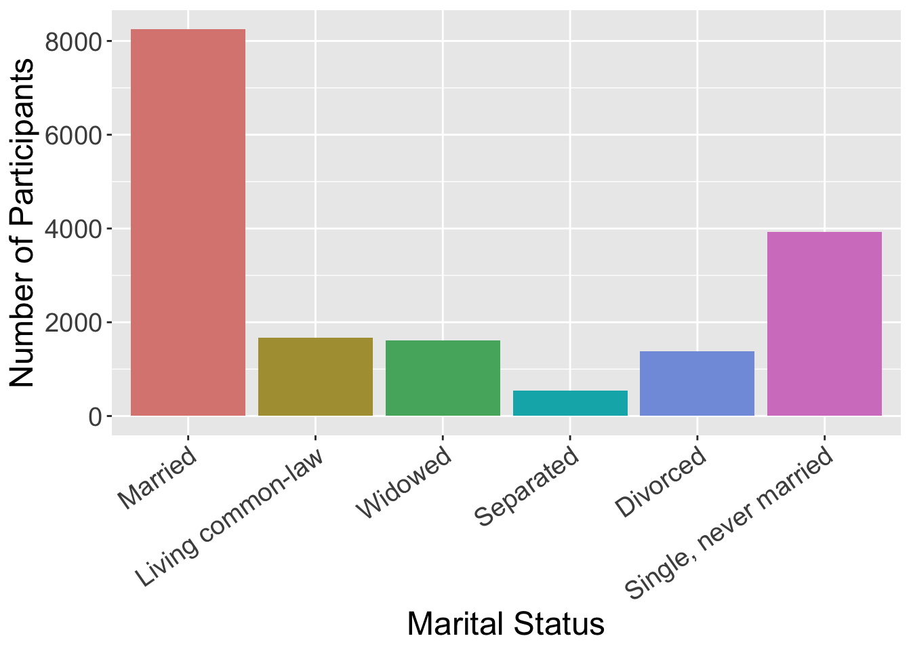
Scatter Plot
Scatter plots include data points that are plotted along an x and y
axis, showing the relationship between these two variables. Often
researchers add a line to these plots to show the statistical
relationship between the variables.
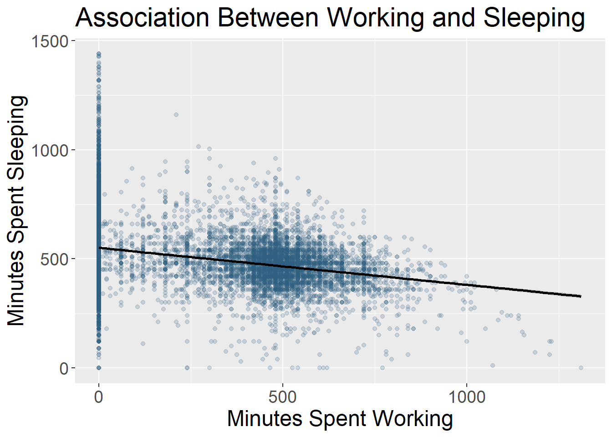
Line Chart
Line charts use connected straight lines to display data. They are
good for showing change over time on a continuous variable. They are
often similar in purpose to bar charts, but visually simpler if there
are many time points. An example of where we often see line charts used
in the news is to visualize the stock market. (Plotting the various age
groups here is not particularly meaningful since this data was only
collected at one time point, but is used to illustrate this type of data
visualization.)
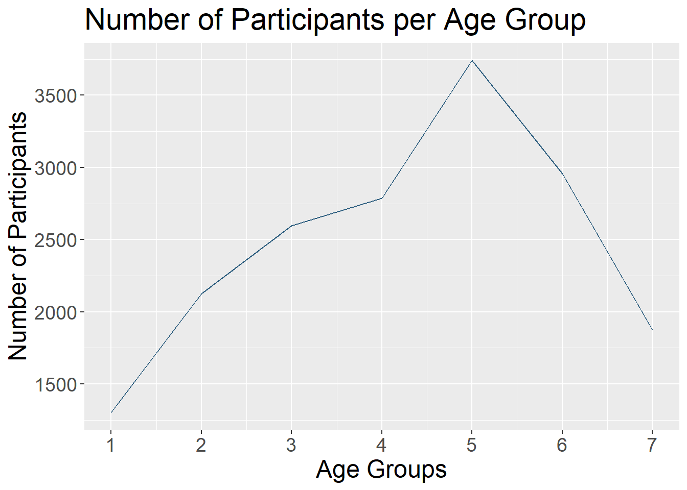
Interactive Data Visualizations
As research and publications move more online and away from print,
this can allow for more interactive data visualizations. These are types
of data visualizations that allow a person to select and change what is
being shown. Check out this great example from
Gapminder.
The default visualization shows GDP and life expectancy over time, and
by country. However, you can change the variables included to view other
data.
So many more!
- Heat Map
- Stacked Bar or Stacked Area Chart
- Violin Plot
- Gantt Chart
- Choropleth Map
What Makes a Good Visualization?
There is an art to picking the best data visualization that fits your
data and the story you are telling. By nature, data visualizations are
abstract representations of our data, with color, shape, and position
representing the data points. This both hides the exact data itself,
while also allowing us to highlight bigger picture ideas about the data,
depending on what we choose to emphasize. When deciding on what type of
data visualization to use, consider the following:
- What question are you exploring with your data and how will it
inform future analyses?
- What is your data visualization adding to your science
communication?
- What take-away message are you conveying with the image?
- What type of variables do you have? Continuous? Categorical? And
what type of abstraction (e.g., color, shape) best suits that
variable?
- Are you comparing groups?
- Are you showing change over time?
- Are you visualizing a relationship between variables?
It can be easy to get in the habit of using the same types of data
visualization over and over again. Check out this website that gives
many creative data visualization options (with R code!), categorized by
goal:
https://r-graph-gallery.com/
Good Data Visualization Princicples
Once you pick the format that fits your needs best, these are some
principles to keep in mind when crafting your visualization to make sure
it is clear to your audience.
| Clear Data |
Consider the format of your data when you include it.
Your data needs to be unambiguously communicated to your audience. For
instance, do you have so many groups that they are difficult to
differentiate? Are your data points stacked on the same spot so the
audience can’t see the density of your data points? |
| Clear Labels |
All data visualizations need labels. This may be the
axis on a scatter plot, legends for your bar graph, or percentages on
your pie chart. You must tell the audience what they are looking at. If
different colors are used, they should represent some aspect of the data
and be clearly labeled. |
| Clear Scales |
Clear and consistent scales are important to avoid
misinterpretation of your data visualization. An axis should be clearly
labeled and include the full scale range. Make it clear if the scale
does not start at 0. Scales should be consistent across visualizations
to allow for comparisons. |
| Simplicity |
Aim to have uncluttered data visualizations. It is easy
to get excited about all you can do creatively in the world of data
visualizations, but sometimes adding too much (e.g., extra colors,
pictures) can actually obscure your main message. Avoid extra info that
doesn’t add to the story you are telling. |
| Accessibility |
Consider how your data visualization design would be
viewed by a variety of people. Text font and size for legends and axis
labels should be clear and not too small. Try not to rely only on color
to distinguish groups (e.g., lines can be dashed or dotted), or pick
colors/hues that are distinguishable by people who are colorblind.
Include alternative text descriptions that can be read aloud by a screen
reader. |
For more information on design principles and the visual hierarchy of
elements, check out
this
article. Size, color, contrast, alignment, repetition, proximity,
whitespace, and texture can all be used to draw focus to particular
visual elements.
Your Turn!
One of the best ways to get into data visualization is to get
inspired from some of the amazing data visualizations that already
exist!
We have two websites with a variety of data visualization
examples.
R
Graph Gallery Includes many examples of data visualizations created
in R. These also include tutorials/R Code used to make them. These
examples go beyond what we will cover in this workshop, but serve as
great inspiration for how much you can do in R!
Tableau Viz
Gallery Includes examples created with the platform Tableau. This is
a proprietary (paid) platform which we are not using in this workshop,
but this gallery still has some great examples to help inspire your data
visualization creativity!
In small groups, on either of these websites, find a data
visualization example that jumps out to you as interesting and then
answer the following questions.
- What captured your attention about this data visualization? The
topic? The design?
- What is the story this example is trying to tell? What is one of the
take-away messages it is conveying?
- What do you like about this visualization? Does it convey
information about the data in a uniquely effective way? Does it adhere
to the principles we discussed?
- Is there anything you find confusing about this example? Anything
you think is missing or that you would change to improve it?
ggplot R Package
Now that we have our data visualization imaginations going, let’s get
into how we can visually represent our data in R.
The go-to package for data visualization in R is
ggplot2, which is part of the tidyverse. You can find more
information about ggplot2 on the
tidyverse website.
This package approaches data visualization through “a grammar of
graphics.” In other words, using the same syntax, you can create an
infinite number of data visualizations. Although there are a lot of
functions and components to learn at first, once you understand the
overall structure of building graphics in ggplot2, you can
replicate and expand on this structure to visualize data in an unlimited
number of ways.
If you have installed the tidyverse, then ggplot2 is
included. Otherwise you can install it now. Let’s also load our dataset
for today.
#install.packages("ggplot2")
#library(ggplot2)
There are many ways to make data visualizations in R; however, other
approaches tend to be more automatic and consequently limit the amount
you can change and adapt your visualization to your needs.
ggplot2 works in layers, allowing for maximum control and
flexibility.
Here are some of the most common layers (i.e., functions) used in
ggplot2. Typically you connect these layers using the
+ symbol. There is often more than one way to build the
same plot with the ggplot package.
- ggplot(): how you will start most
plots you build in ggplot2. The rest of the information
goes within this function.
- aes(): this is the aesthetic mapping
function, in which you can control aesthetic components of the plot. You
can add colors, axis labels, font sizes and more within this function.
Color and shape can be defined both within and outside of the aesthetic
function.
- geom_point(): used for making a
scatter plot
- geom_line(): used for adding a line
to a plot
- geom_histogram(): used for making a
histogram
- geom_col(): used for making a bar
plot
- xlab, ylab, and
labs(title = ): used for adding axis labels and an
overall title to plots
- color: assigns a color to part of the
plot, such as different groups or the data points
- fill: assigns the interior color of
part of the plot, such as a confidence band or the bars in bar plots
- alpha: used to change the
transparency of a component of the plot. Useful if you lots of have
overlapping data points or distributions from multiple groups.
- size: used to set the size of part of
the plot, such as how big the data points or text should be
There are many more data visualization options in ggplot
but to get started today we are going to focus on making a bar plot
(good for categorical data) and a scatter plot (good for continuous
data).
Basic Bar Plot: Counts
Let’s make our first plot in R! We are going to slowly add layers,
building up to a box plot representing the number of people in each
group in the isFeelRushed variable.
First we create the blank plot on which we will add our data. We
nearly always start with the function ggplot and then
telling the function what dataset to use.
ggplot(js_data)

This creates our blank canvas.
Next we tell ggplot what variable we want to use and put it in the
aes() function. If you want a bar chart representing the
number of people in each group, you can add just one variable to the
aes() function. We include the as.factor
function around the isFeelRushed variable so it is treated
as a categorical variable for the box plot instead of a numeric
variable.
ggplot(js_data, aes(x = as.factor(isFeelRushed)))
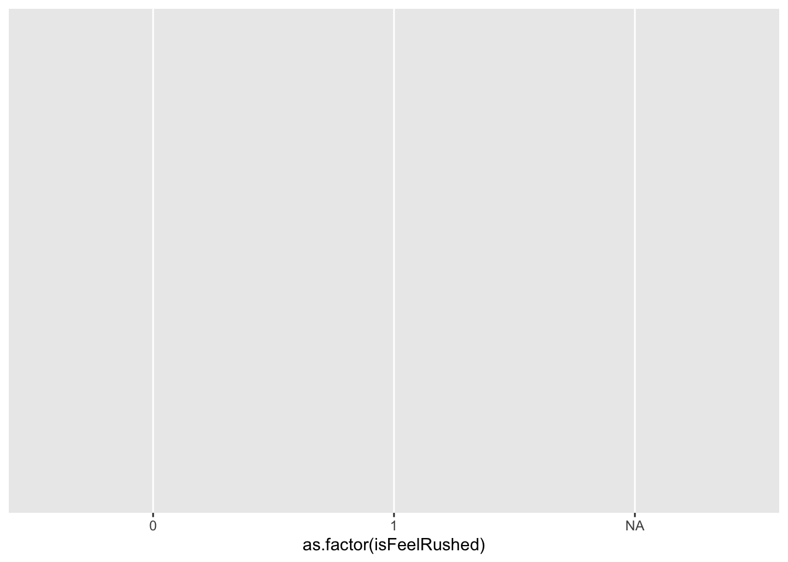
You now see that the grid represents a scale relevant to that
variable.
Next, we tell ggplot what type of data visualization we want. To
create a bar chart we use the function geom_bar(). To see
how many people are in each of the isFeelRushed groups, we
use the default geom_bar(stat = "count"). Remember that we
connect layers with a + symbol.
ggplot(js_data, aes(x = as.factor(isFeelRushed))) +
geom_bar(stat = "count")
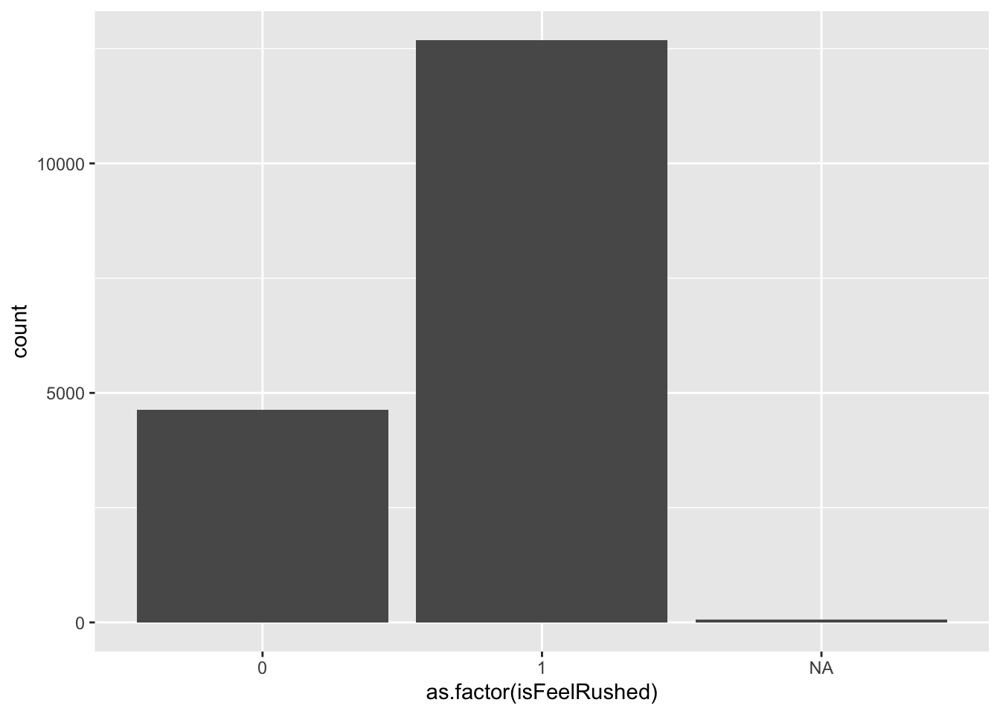
We’ve got a bar chart!
Lastly, let’s add some labels to the x-axis and y-axis to make it
clear what is being plotted.
ggplot(js_data, aes(x = as.factor(isFeelRushed))) +
geom_bar(stat = "count") +
xlab("Feeling Rushed") +
ylab ("Number of Participants")
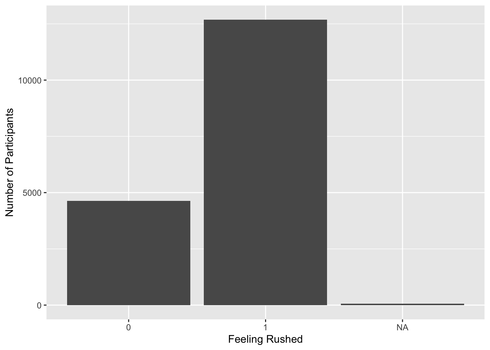
Basic Bar Plot: Group Means
Building from yesterday, let’s see if people who feel rushed tend to
work more than people who do not feel rushed. To represent the mean for
each group or some other variable, you add both an x and a y variable to
the aes() function and use the
geom_bar(stat = "summary"). Note that the Y-axis scale has
now adjusted to a scale that matches the variable we are using (i.e.,
mean number of minutes spent working for each group).
ggplot(js_data, aes(x = as.factor(isFeelRushed), y = durWork)) +
geom_bar(stat = "summary") +
xlab("Feeling Rushed") +
ylab ("Average Minutes Working")
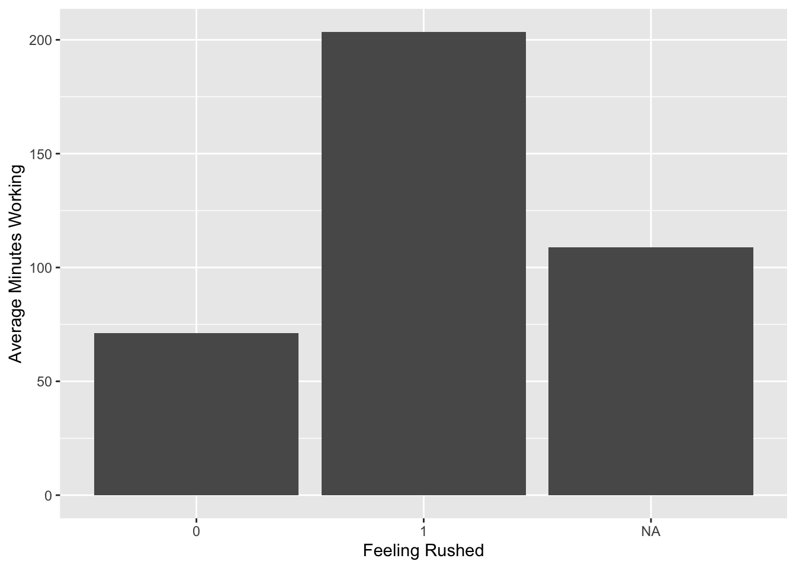
- Most plots will start with the
ggplot()function
- You have to include the object where
ggplot() will get
the information for the plot from. In this case, it’s our dataset
js_data
- Within the
aes() function, we identify what the x and y
variables are for this plot
- We add layers using the
+ sign
- Next we tell
ggplot() what type of plot we are making;
in this case we are creating a bar plot using the function
geom_bar()
- Then we add what type of statistic we want presented on the plot.
Here we ask for the mean of each group for the variable durWork using
the function
geom_bar(stat = "summary")
- We add a label to the x-axis with
lab("Feeling Rushed")
- We add the label to the y-axis with
ylab ("Time Working")
Improved Box Plot!
This plot gets the idea across, but we can add more layers and
functions to make more adjustments. See the walkthrough below for how we
made all these changes.
plotlabels <- c("Not Rushed", "Rushed", "Did Not Respond")
ggplot(js_data, aes(x = as.factor(isFeelRushed), y = durWork)) +
geom_bar(stat = "summary", fill = "#2D5E7F") +
xlab("Feeling Rushed") +
ylab ("Average Minutes Working") +
labs(title = "Working and Feeling Rushed") +
scale_x_discrete(labels = plotlabels) +
theme(text = element_text(size = 18),
axis.text.x = element_text(angle = 25, hjust = 1))
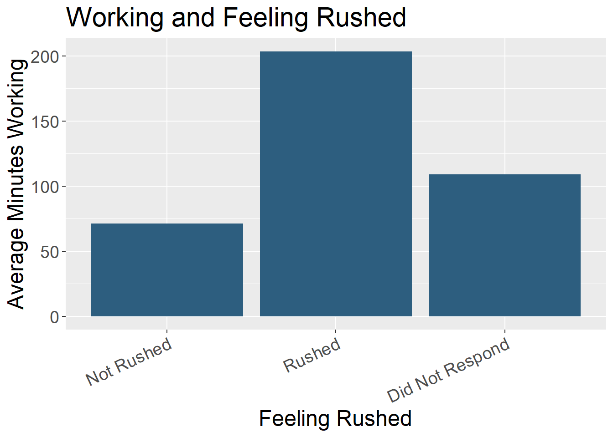
- We can change the color of the bars using
fill =. Here
we added the specific color using a hex code. But you can also write in
the names of colors such as “blue”.
- Using
labs(title = "") we added an overall title to the
plot
- We probably want to indicate what each category represents, rather
than the “0”, “1” and “NA” labels. To add text labels, we first create
an object with each of those labels in order
(
plotlabels <- c("Not Rushed", "Rushed", "Did Not Respond")).
Then in the scale_x_discrete(labels = plotlabels) function
we call to that object we created as the labels for the x-axis. There
are many other ways to adjust the labels for each axis, but this method
works well for a small number of groups.
- In the
theme() layer you can add many different
specifications. Here we added
text = element_text(size = 18) to make the text size bigger
than the default and made the x-axis labels angled so they fit better
using axis.text.x = element_text(angle = 25, hjust = 1).
The hjust = adjusts the vertical location of the axis
labels so they don’t overlap with the plot itself. vjust =
can be used to move the labels right and left.
Try manipulating this plot in some way. Can you change the color of
the bars? What happens if you change angle = 90?
Basic Scatter Plot
Now let’s make a scatter plot to visualize two continuous variables.
We are going to check if it looks like there is a correlation between
how much time people work (durWork) and how much they sleep
(durSleep).
ggplot(js_data, aes(durWork, durSleep)) +
geom_point() +
geom_smooth() +
xlab("Minutes Spent Working") +
ylab ("Minutes Spent Sleeping")
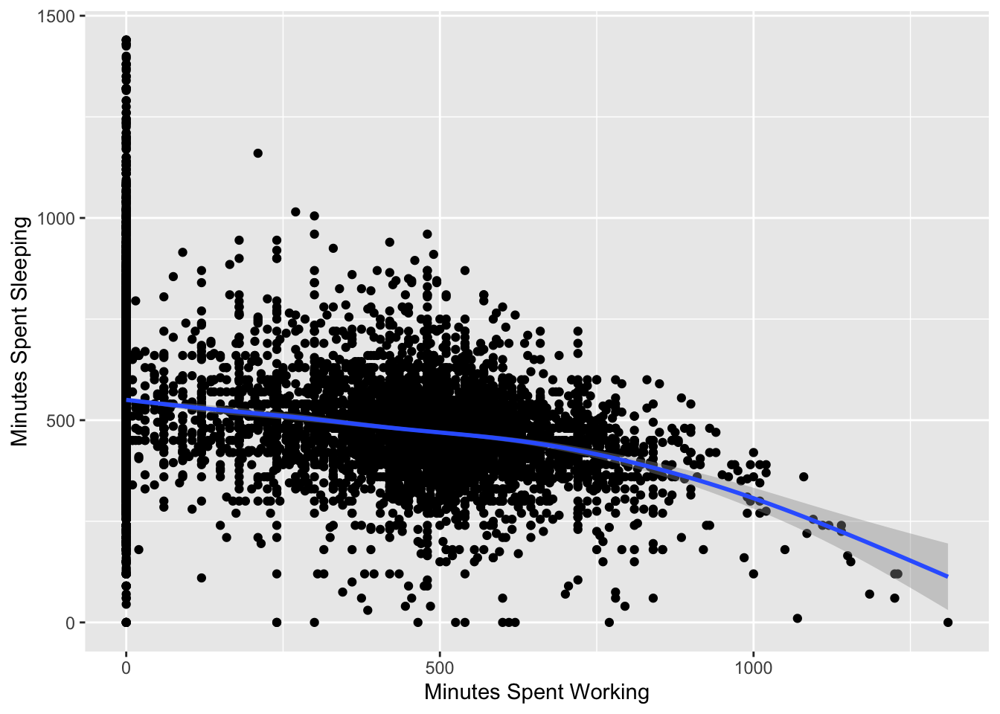
- Again we start with the
ggplot() function, including
telling it to use the dataset js_data
- In the
aes() function we list the x and y variables
(here durWork and durSleep)
- The
geom_point() function is what makes a scatter
plot
- The geom_smooth() is what adds the correlation line to the plot
- The
xlab() and ylab() add the x-axis and
y-axis labels to the plot
Improved Scatter Plot!
Now let’s add some layers and aesthetic adjustments to improve this
plot.
ggplot(js_data, aes(durWork, durSleep)) +
geom_point(color = "#2D5E7F", alpha = .2) +
geom_smooth(method = lm, color = "black") +
xlab("Minutes Spent Working") +
ylab ("Minutes Spent Sleeping") +
scale_x_continuous(breaks = seq(0, 1500, 250)) +
labs(title = "Association Between Working and Sleeping") +
theme(text = element_text(size = 18))
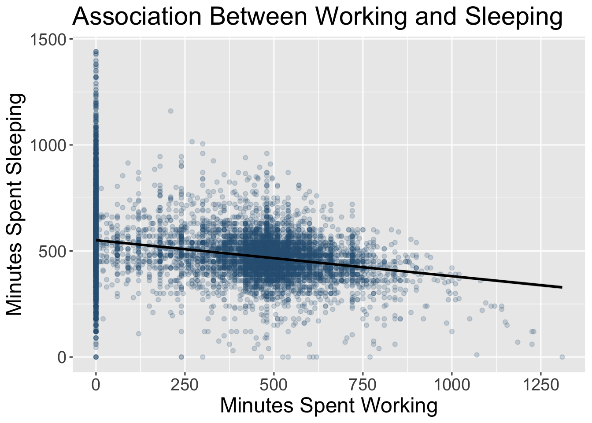
- We can change the color of the data points by adding
color = "#2D5E7F" and change the transparency of the data
points (so you can see where there are overlapping clusters) with the
addition of alpha = .2.
- In the
geom_smooth() function we changed the method for
calculating the line to be linear (instead of the ggplot default) using
method = lm and adjusted the color of the line with
color =. Remember that you can write hex code numbers or
the names of colors to adjust colors. Make sure both are in quotes to
avoid error messages.
- We adjust the x-axis tick marks with the
scale_x_continuous(breaks = seq(0, 1500, 250)) part, which
tells R to plot the x-axis on a sequence from 0 to 1500 (this captures
all of the responses in our data), with labels every 250 minutes.
- The
labs(title = "Association Between Working and Sleeping")
adds an overall title to the plot
- Lastly,
theme(text = element_text(size = 18)) adjust
the text size
Try manipulating this plot in some way. Can you make the data points
more and less transparent? Can you change the color of the line? What
happens if the x-axis has labels every 100 minutes?
Your Turn!
Take a look at our data set and make two new plots.
Make a plot comparing groups (i.e., a categorical variable) on
one of the duration variables (i.e., a continuous variable).
Make a plot comparing two continuous variables.
Challenge: What is one component of your plot you
would like to change? Can you look up a solution?
